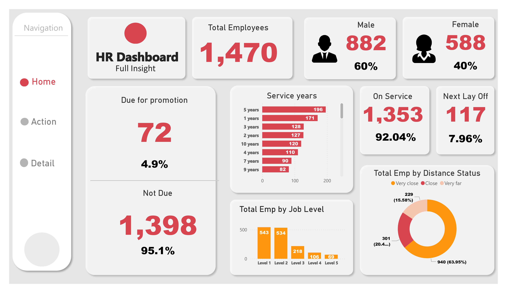

HR Analytics Dashboard: Empowering Data-Driven Decisions
The Challenge
In today's data-driven world, effective human resource management requires more than intuition – it demands actionable insights. HR departments are flooded with data, but making sense of it all to inform strategic decisions can be a significant challenge. How can we translate raw HR data into a clear, concise, and easily digestible format that empowers stakeholders to make informed decisions?
The Solution: An Interactive HR Dashboard
To address this challenge, I developed an interactive HR dashboard designed to provide a comprehensive overview of key workforce metrics. This dashboard transforms complex HR data into visually compelling and easily interpretable insights, enabling data-driven decision-making across various HR functions.
Technical Skills
- Data Visualization: Power BI
- Data Analysis: Power BI
- Data Cleaning and Preparation: Power Query, DAX
- Dashboard Design Principles
Key Insights and Accomplishments
- Workforce Demographics: Visualized gender distribution, total employees, and provided insights into potential diversity and inclusion initiatives.
- Employee Performance: Identified employees due for promotion and those at risk of layoff, facilitating proactive talent management strategies.
- Departmental Performance: Analyzed promotion and layoff trends by department, allowing for targeted interventions and resource allocation.
- Employee Satisfaction: Visualized employee satisfaction levels, enabling HR to identify areas for improvement and enhance employee engagement.
- Attrition Risk:/ Provided insights into employee turnover risks based on factors like service years and distance from work, allowing for proactive retention strategies.

Main Takeaways
- Data Visualization is Key: Transforming raw HR data into interactive visualizations makes it easier to understand trends, identify areas for improvement, and communicate insights effectively.
- Data-Driven Decision Making: The dashboard empowers HR professionals to move beyond gut feelings and make informed decisions based on concrete data.
- Proactive HR Management: By identifying potential issues early on, such as attrition risks or employee satisfaction concerns, HR can implement proactive strategies to address them.
Conclusion
This HR analytics dashboard is a powerful tool for any organization looking to enhance its HR practices and drive data-driven decisions. By providing a clear and concise overview of key workforce metrics, the dashboard enables HR professionals to make informed decisions regarding talent management, employee engagement, and overall organizational effectiveness.